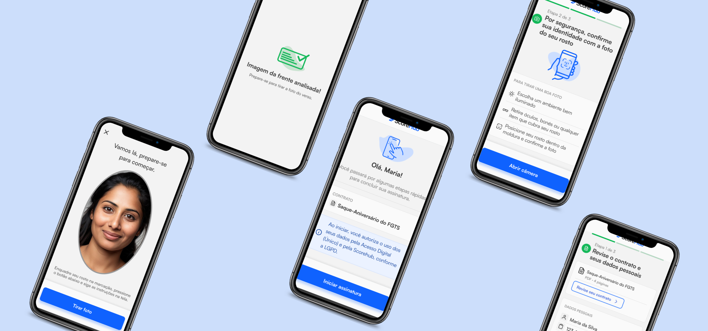
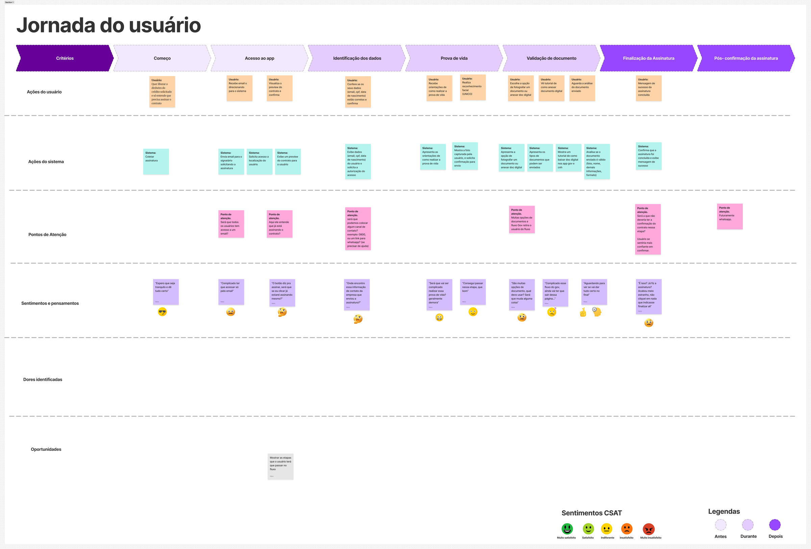
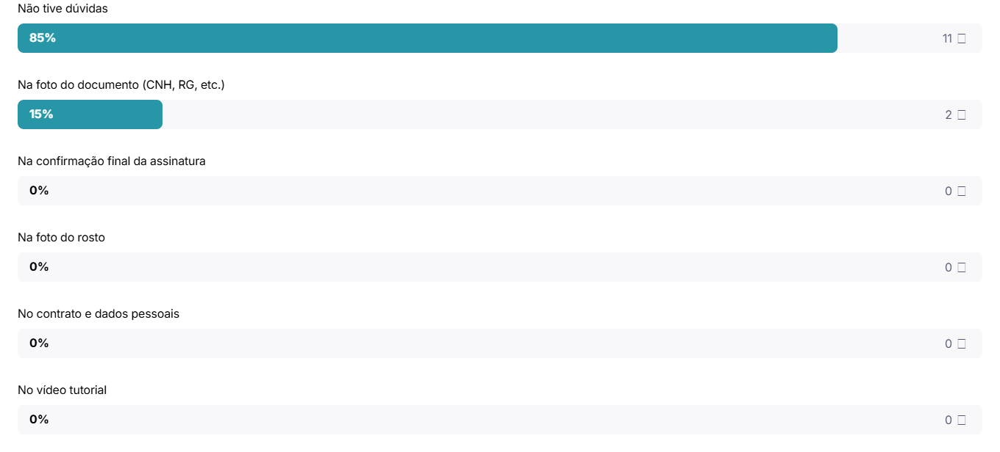

ScoreHub Digital Signature
A digital signature solution that combines identity verification, liveness detection, document management and fraud prevention into a single seamless experience.
Problem
Prevent fraud in credit contract signatures without making things hard for people who aren't comfortable with technology.
My role
Sole designer on the product. I owned research, flows, mobile and web screens, testing and the landing page.
Solution
A guided mobile flow with liveness check and ID validation, plus a web platform where companies track their signatures.
Outcome
Average signing time dropped by 52%, and the product has passed 1.1 million signatures.

Overview
ScoreHub Digital Signature was designed to make digital signing processes more secure, intuitive and efficient by integrating identity verification, liveness detection, fraud prevention and document management into a single workflow.
Originally created within the ScoreHub ecosystem, the solution evolved into the platform’s primary product and is currently used by real customers in fraud-sensitive financial operations.
My contribution covered the entire design process, including discovery, user research, personas, journey mapping, prototyping, usability testing, mobile experience, web platform design and commercial communication through the product landing page.
I designed the product from its first version. This case study focuses on the redesign, the most in-depth phase of the project.
Turning a highly sensitive process into a simple and trustworthy experience
Digitally signing credit contracts requires security, clarity and trust. At the same time, end users may have different levels of familiarity with technology, digital documents and biometric validation.
The challenge was to design a flow capable of preventing fraud without making the experience feel difficult, technical or intimidating for users who simply need to complete a signature.
The challenge
Balancing fraud prevention, security and usability for real users navigating financial processes.
Understanding user behavior, barriers and expectations
Before evolving the experience, I investigated users’ technological behavior, financial motivations, pain points and trust concerns throughout digital signing journeys.

Mapping user behavior, barriers, expectations and communication tone.
Personas created to guide accessibility, trust and communication decisions.
Mapping friction points before designing the interface
The journey was structured around moments of greater uncertainty: data confirmation, contract review, document submission, liveness detection, validation errors and signature completion.

User journey used to identify opportunities for simplification, clarity and security.
A guided, secure and fully digital experience

Mobile signature flow designed to guide users step by step.
Managing signatures in a single environment
Beyond the signer experience, the solution also needed to provide companies with visibility and control over contracts, statuses, validations, decisions and documents.
The web platform was designed to centralize process management, supporting transparency and operational monitoring throughout the signing journey.
Product decision
Clearly separating the end-user signing experience from the operational view used by companies, while maintaining consistency across both sides of the product.

Web interface for monitoring and managing digital signatures.
Validating the experience with real users
I conducted an unmoderated usability study in Maze with 16 mobile participants. While all users successfully completed the task, the results revealed opportunities to improve hierarchy, clarity and touch targets.
participants
success rate
average completion time
average misclick rate

85% of participants reported having no doubts during the flow.

64% rated the experience as very easy.
What the data revealed
High cognitive load on the welcome screen
Users frequently interacted with non-clickable elements, indicating uncertainty about where to begin.
Weak affordance in document selection
Participants attempted to tap the text itself rather than the intended action area, revealing interaction ambiguity.
No clear next step after completion
After signing, users expected additional actions such as downloading a receipt or reviewing the signed contract.
Data-driven improvements
The experience was refined through behavioral analysis, usability testing and multiple design iterations focused on improving completion rates.
Refined prototype after usability testing.
Key improvements implemented
- Larger touch targets
- Stronger emphasis on primary actions
- Loading feedback states
- Improved hierarchy for legal information
- Clear selection states
- Post-signature actions
Communicating product value
As the product evolved, I also contributed to the commercial landing page, connecting UX decisions to a clear value proposition for B2B customers.
The page was structured around a problem-solution storytelling approach, highlighting security, key differentiators, business benefits and a clear call to action.
AI-assisted workflow
I used AI as a support tool for data analysis, content structure, narrative refinement and exploration of landing page alternatives.

Landing page created to present the digital signature service with clarity and business value.
A strategic product for ScoreHub’s evolution
After the redesign, average time to complete a signature dropped by 52%.
signatures completed in the product, which is live with real customers.
contracts signed in under 24 hours.
What 6.5K people said after signing
Together with the dev team, I implemented a Customer Effort Score (CES) survey at the end of the journey: one quick question about how easy it was to sign. In 10 days, it collected 6,570 responses.
rated signing easy or very easy
6,570 responses · June 2026Speed is what people mention most
Of 788 written comments, about 1 in 5 mention speed, and almost as many mention ease of use.
Only 1.8% found it hard
Out of 6,570 responses, just 117 people rated the flow difficult or very difficult.
The next thing to improve
In negative comments, the most cited friction is taking the ID photo and the selfie, as reported by people who wear glasses.
The project that strengthened my Product Design mindset
This project strengthened my ability to connect research, product strategy, interface design, business goals and communication into a real solution.
It also reinforced the importance of validating design decisions with data, especially in financial flows where clarity, security and trust are essential parts of the experience.
More projects
Explore other products and experiences I’ve designed.